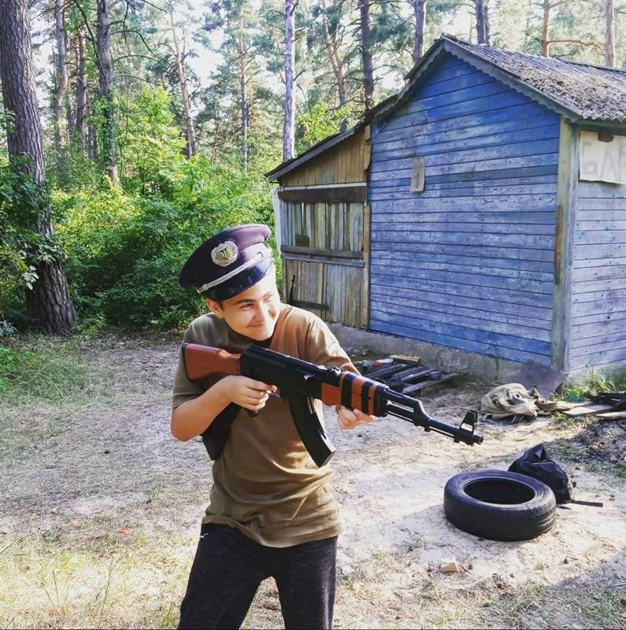

Borodkin Oleksandr Stepanovich
Date de naissance : 22.06.2006
Ville de naissance : Vychhorod, Oblast de Kiev, Ukraine
Domiciles:
- Vychhorod, Mazepy 6
- Novi Petrivtsi, Sviato-Pokrovska 81-A
- Monnaz, Au Trésy 10
Hobbys:
- Airsoft
- Lego
- Memes
Series préférées :
- Sherloh
- Hotel Galicie
- Simpsons
- Futurama